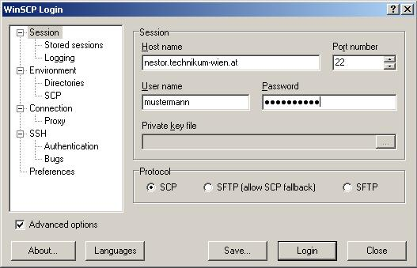
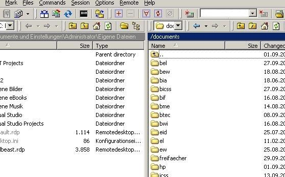

| |
| Die neue Version des Lehre FAQs ist in Arbeit. Bis diese online
gestellt wird, finden Sie hier vorerst eine Kurzanleitung zum Umgang
mit WinSCP um Daten auf die Lehre zu stellen. |
| |
| |
| Geben Sie auf ihrem WinSCP Clientprogramm nestor.technikum-wien.at als Server ein. |
| |
| Geben Sie nun Ihren Benutzernamen und das dazugehörige Passwort ein, um sich einzuloggen. |
| |
|  |
| |
| Wechseln Sie dann manuell in das Verzeichnis /documents. |
| |
| Bitte berücksichtigen Sie dabei, dass das System cAsESensiTIVe
ist und Sie daher auf Groß- und Kleinschreibung achten müssen. |
| |
| Für den Upload von Skripten wechseln Sie in den entsprechenden
Studiengang und von dort aus in das gewünschte Semester und in
den Gegenstand. |
| |
| Semester sind mit Studiengangskürzel/Semesternummer benannt
(z.B. bew/1). |
| |
| Fächer mit Studiengangskürzel/Semesternummer/Gegenstand
(z.B. bew/1/adt - Elektronik und Wirtschaft, 1. Semester, Analog/ Digitaltechnik). |
| |
|  |
| |
| Alle Files die Sie den Studierenden zur Verfügung stellen wollen
stellen Sie bitte einfach in das Downloadverzeichnis des jeweiligen
Gegenstandes (z.B. bew/1/adt/download). |
| |
| Hinweis: Sollten Sie Bilder auf den Server laden, sollte die Übertragung
auf "binary" eingestellt sein. |